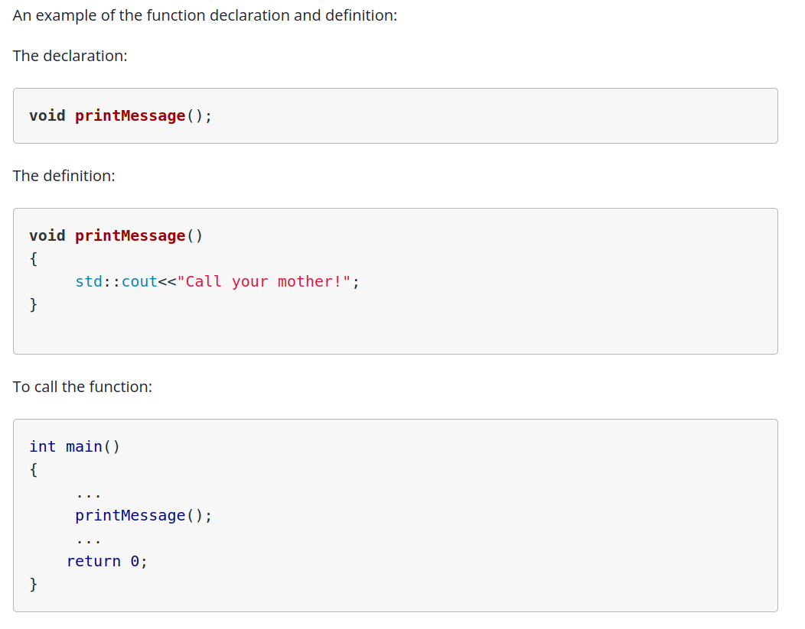
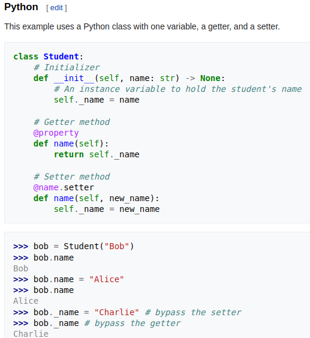
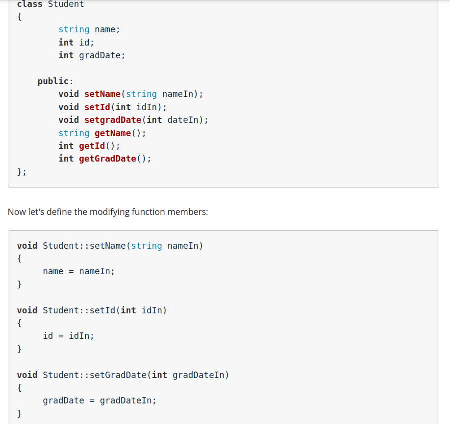
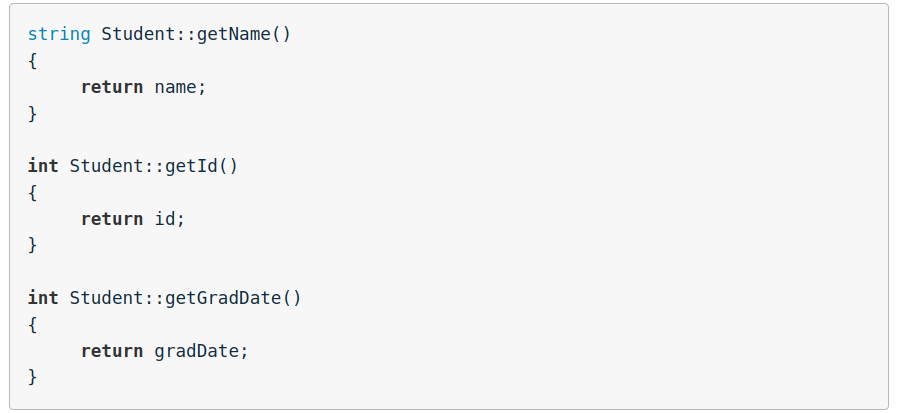
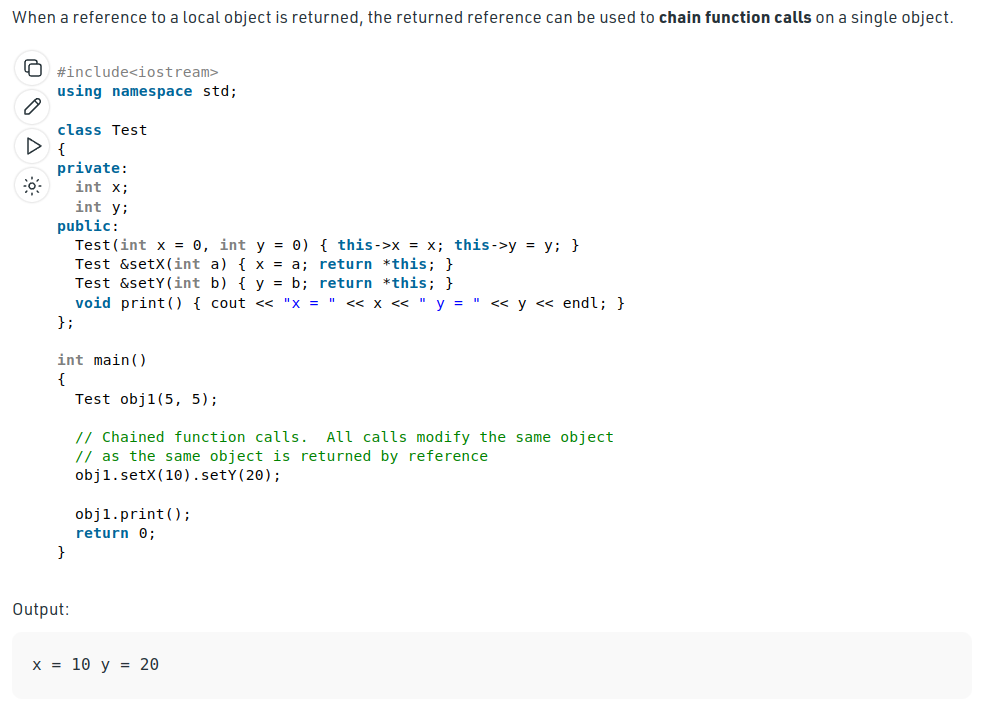

Table of contents
Before you Begin

Convention
#include<iostream>
void printMessage(); //note, this is placed BEFORE main()
int main()
{
printMessage();
return 0;
}
//note, the definition is conventionally placed after main
void printMessage()
{
std::cout<<"HEY! I'm from a function!";
}
Functions in Header Files
This is simlar to how we create a utils file in python. This helps keep the code cleaner
Variable scope in different functions
Return altered variable from function
See the below example:
#include<iostream>
int increment(int input);
int main()
{
int a = 34;
std::cout<<"Before the function call a = "<<a<<"\n";
a = increment(a);
std::cout<<"After the function call a = "<<a<<"\n";
return 0;
}
int increment(int input)
{
input++;
std::cout<<"In the function call a = "<<input<<"\n";
return input;
}
Note. if we just called the 6th line as increment(a) then even after function call, the value of a would remain as 34. This is because the scope of the variable in the function is not the same as that in the main function
Return variable by reference
Here we’ll be using pointers to pass only an address Note the comments within the code
#include<iostream>
void increment(int &input); //Note the addition of '&'
int main()
{
int a = 34;
std::cout<<"Before the function call a = "<<a<<"\n";
increment(a);
std::cout<<"After the function call a = "<<a<<"\n";
return 0;
}
void increment(int &input)//Note the addition of '&'
{
input++; //**Note the LACK OF THE addition of '&'**
std::cout<<"In the function call a = "<<input<<"\n";
}
Here by passing the address of the variable, any changes made will reflect in the main function when that same address is referenced again.
Case study for call by reference
Understand from the below program how we need to:
- pass pointers only when data modification to that value is required
- a hybrid way of calling by reference and by value is both valid
#include <iostream>
int main()
{
char operation = '*';
float input1 = 9.8;
float input2 = 2.3;
float result;
calculate(input1, input2, operation, result);
printEquation(input1, input2, operation, result);
return 0;
}
void calculate(float in1, float in2, char op, float &ans);
void printEquation(float input1,float input2, char operation, float result);
void calculate(float in1, float in2, char op, float &ans)
{
switch(op)
{
case '+': ans = in1 + in2;
break;
case '-': ans = in1 - in2;
break;
case '*': ans = in1 * in2;
break;
case '/': ans = in1 / in2;
break;
default: std::cout<<"Illegal operation\n";
}
}
void printEquation(float input1,float input2, char operation, float result)
{
std::cout<<input1<<" "<<operation<<" "<<input2<<" = "<<result<<"\n";
}
Pass arrays by reference to functions
There are three ways of doing this:
- void functionName(variableType *arrayName)
- void functionName(variableType arrayName[length of array])
- void functionName(variableType arrayName[])
But in all the above ways, the array is always passed as a pointer internally
#include<iostream>
#include<iomanip>
//Pass the array as a pointer
void arrayAsPointer(int *array, int size);
//Pass the array as a sized array
void arraySized(int array[3], int size);
//Pass the array as an unsized array
void arrayUnSized(int array[], int size);
int main()
{
const int size = 3;
int array[size] = {33,66,99};
//We are passing a pointer or reference to the array
//so we will not know the size of the array
//We have to pass the size to the function as well
arrayAsPointer(array, size);
arraySized(array, size);
arrayUnSized(array, size);
return 0;
}
void arrayAsPointer(int *array, int size)
{
std::cout<<std::setw(5);
for(int i=0; i<size; i++)
std::cout<<array[i]<<" ";
std::cout<<"\n";
}
void arraySized(int array[3], int size)
{
std::cout<<std::setw(5);
for(int i=0; i<size; i++)
std::cout<<array[i]<<" ";
std::cout<<"\n";
}
void arrayUnSized(int array[], int size)
{
std::cout<<std::setw(5);
for(int i=0; i<size; i++)
std::cout<<array[i]<<" ";
std::cout<<"\n";
}
Best practices for passing variables to functions
When passing variables that are not going to be modified in the function, define the variable as a ‘const’ so that it cannot be changed by the function.
For example:
int doubleInput(const int, input)
{
int h = input *2;
return h;
}
Classes
There is a concept called getter/setter in python. In C++ this is called a mutator
Definition: Mutators are functions that access/modify data from an external class



Typical Class functionality
#include<iostream>
using namespace std;
class Student
{
string name;
int id;
int gradDate;
public:
// setter methods which don't return anything
// therefore are void types
void setName(string nameIn);
void setId(int idIn);
void setGradDate(int dateIn);
// getter methods which return a specific datatype
// Note. they also don't need any inp params
string getName();
int getId();
int getGradDate();
// print also only outputs from class directly
// therefore void
void print();
};
void Student::setName(string nameIn)
{
name = nameIn;
}
void Student::setId(int idIn)
{
id = idIn;
}
void Student::setGradDate(int gradDateIn)
{
gradDate = gradDateIn;
}
void Student::print()
{
cout<<name<<" "<<id<<" "<<gradDate;
}
string Student::getName()
{
return name;
}
int Student::getId()
{
return id;
}
int Student::getGradDate()
{
return gradDate;
}
int main()
{
int integer1;
float float1;
Student student1;
integer1 = 4; //assign a value to integer1
float1 = 4.333; //assign a value to float1
student1.setName("Catherine Gamboa"); //assign a value to the student name
student1.setId(54345); //assign a value to the student id number
student1.setGradDate(2017); //assign a value to the student grad date
//Let's print the values of our variables
cout<<"integer1 = "<<integer1<<"\n";
cout<<"float1 = "<<float1<<"\n\n";
//There are two ways we can print the values of our class:
//The first is to call the print function we created.
cout<<"Using the Student::print function\n";
cout<<"Student1 = ";
student1.print();
cout<<"\n\n";
//The second is to access each member of the class using the get functions
cout<<"Using the student access functions\n";
cout<<"Student1 name = "<<student1.getName()<<"\n";
cout<<"Student1 ID = "<<student1.getId()<<"\n";
cout<<"Student1 Grad Date = "<<student1.getGradDate()<<"\n";
return 0;
}
Constructors
A constructor is special function that is executed whenever we create a new instance of the class. It is used to set initial values of data members of the class.
Constructors also do not return any value
/*Goal: learn to use constructors*/
#include<iostream>
using namespace std;
//The cats class that we used earlier in the lesson.
class Cats
{
string name;
string breed;
int age;
public:
Cats(); //declaring the constructor
void setName(string nameIn);
void setBreed(string breedIn);
void setAge(int ageIn);
string getName();
string getBreed();
int getAge();
void printInfo();
};
//defining the constructor
Cats::Cats()
{
cout<<"Assigning inital values in the constructor\n";
name = "Unknown";
breed = "Unknown"; //the initial value of the breed
age = 99; //the initial value of the age
}
void Cats::setName(string nameIn)
{
name = nameIn;
}
void Cats::setBreed(string breedIn)
{
breed = breedIn;
}
void Cats::setAge(int ageIn)
{
age = ageIn;
}
string Cats::getName()
{
return name;
}
string Cats::getBreed()
{
return breed;
}
int Cats::getAge()
{
return age;
}
void Cats::printInfo()
{
cout<<name<<" "<<breed<<" "<<age;
}
//+++++++
int main()
{
Cats cat1;
cout<<"Cat1 information: ";
cat1.printInfo();
return 0;
}
Note the syntax of a constructor is simple and this is all you need to keep in mind
ClassName::ClassName()
{
dataMemberName1 = value;
dataMemberName2 = value;
...
}
// the same is in the Cats class as
Cats::Cats()
{
cout<<"Assigning inital values in the constructor\n";
name = "Unknown";
breed = "Unknown"; //the initial value of the breed
age = 99; //the initial value of the age
}
Destructors
Destructors are special class functions that are called whenever an object goes out of scope. Just like a constructor, a destructor is called automatically.
Destructors cannot:
- return a value
- accept parameters
Destructors must have the same name as the class but the destructor is identified with a tilda (~) symbol
class Dog
{
private:
int license;
public:
Dog();
Dog(int licenseIn);
void setLicense(int licenseIn);
int getLicense();
~Dog();
};
Dog::Dog()
{
license = 0;
}
Dog::~Dog()
{
cout<<"\nDeleting the dog";
// to actually delete the object in memory
// lookup the memory allocation page
}
Arrays of Classes
See the below example of how to have each element of an array be a class
/*main.hpp*/
/*main.hpp*/
/*header file for main.cpp*/
#include<iostream>
using namespace std;
class Student
{
int grade[5];
int id;
public:
Student();
void setId(int idin);
void setGrade(int index, int gradeIn);
int getId();
int getGrade(int index);
int getAvg();
void printInfo();
};
Student::Student()
{
for(int i=0;i<5;i++)
{
grade[i] = 0;
}
id = 0;
}
void Student::setId(int idin)
{
id = idin;
}
void Student::setGrade(int index, int gradeIn)
{
grade[index] = gradeIn;
}
int Student::getId()
{
return id;
}
int Student::getGrade(int index)
{
return grade[index];
}
int Student::getAvg()
{
int sum = 0;
for(int i=0; i<5;i++)
sum = sum + grade[i];
return sum/5.0;
}
void Student::printInfo()
{
cout<<id<<"\n";
for(int i=0; i<5;i++)
cout<<grade[i]<<" ";
}
int main()
{
const int SIZE= 3;
//Create a course of students
Student course1[SIZE];
//Each array element is a Student type
//so it has access to the members of Student
course1[0].setId(1000);
course1[1].setId(1111);
course1[2].setId(2222);
course1[0].setGrade(0,83);
course1[1].setGrade(0,95);
course1[2].setGrade(0,72);
course1[0].setGrade(1,87);
course1[1].setGrade(1,52);
course1[2].setGrade(1,70);
course1[0].setGrade(2,90);
course1[1].setGrade(2,85);
course1[2].setGrade(2,82);
}
Main takeaway is that the declaration for the array of class objects is:
const int SIZE= 3;
Student course1[SIZE];
Tricky Aspects
Now suppose we have a class not visible to us and it’s called Dog
However, we use it to create an instance of the class in an array. This array now becomes of the datatype Dog. Similar to how we say int courses[3]
See how this plays out below:
#include<iostream>
#include "Dog.cpp"
using namespace std;
int main()
{
const int SIZE=3;
Dog roster[SIZE];
roster[0].setName("Blue");
roster[1].setName("King");
roster[2].setName("Spot");
printRoster(roster,SIZE);
return 0;
}
// See here that we declare the roster as of type Dog instead of say: int roster[]
void printRoster(Dog roster[], int size);
void printRoster(Dog roster[], int size)
{
for(int i=0;i<size;i++)
{
roster[i].printInfo();
cout<<"\n\n";
}
}
‘this’ Pointer
Check out the following link for this pointers
Check out this video for static class varible and understand the difference between memeber functions/variables of a class and static variables of a class.
Case 1: Using ‘this’ to make code more readable
suppose we have the following code:
class Point
{
int x,y;
public:
Point(int x1, int y1)
{
x = x1;
y = y1;
}
};
int main()
{
Point p1(10,20);
}
Now in the constructor there are two types of variables x,y and x1,y1 which feels unncessary and may confuse the code reviewer. To prevent this we can use this pointer
class Point
{
int x,y;
public:
Point(int x, int y)
{
this->x = x;
this->y = y;
}
};
int main()
{
Point p1(10,20);
}
Case 2: To return a reference to the class object and chain calls
-
As we learnt,
thisis a reference to each class object applied to non-static variables/member funcs (This is because static vars are common to each class btw, obviously explained in the video above pls watch) - Also note from the pointers chapter, if
float x = 3;, then justx;would call the variable value - But
&xwould return the address of x. Therefore&is the return type modifier. We see this used below
